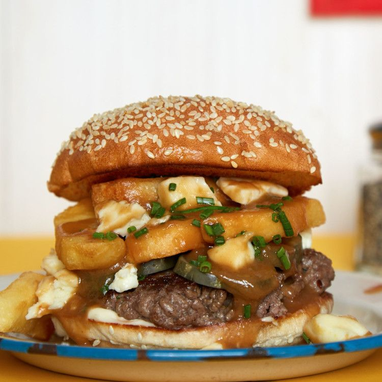

Poutine on the Ritz

"Oh, Canada! This friends-from-the-north-inspired recipe is made up of an all-beef patty topped with fresh cheese curds,
brown gravy, and Ritz cracker crumbs. And it comes with a side of poutine fries. It's the kind of meal that makes your heart
say, "Why do you hate me?" But it's delicious enough for you to say to your heart, "Deal with it, you baby!" Like a good
man, fresh cheese curds may be a bit hard to find, but you can usually get them at higher end grocery stores or local dairies."
Ingredients
- 3 Tbsp black pepper, divided
- 2 Tbsp paprika
- 2 tsp cayenne pepper
- French Fries
- 4 Tbsp butter
- 6 Tbsp flour
- 3 cups beef stock
- 1 pound ground beef
- salt
- 4 buns
- Fresh cheese curds
- 1 sleeve Ritz crackers
Steps
- Combine 2 tablespoons of the pepper with the paprika and cayenne in a large bowl. Cook your fries. Toss the finished fries
with the pepper mixture and a pinch of salt and keep warm.
- To make the gravy, melt the butter in a saucepan over medium heat and then whisk in the flour. Keep whisking until the mix
starts to turn a light brown and you can smell the toasty aroma. This is now a roux. Add in 2 cups of the beef stock and stir
until completely combined. Stir in remaining 1 tablespoon black pepper, and then slowly add the remaining stock. It's okay to
leave some out if you like thicker gravy.
- Make 4 patties, season both sides with salt and pepper, and cook your burgers.
- BUILD YOUR BURGER: Bottom bun, burger, a bunch of cheese curds, brown gravy, a gratuitous amount of crumbled Ritz crackers, top bun
- For the fries, simply mix in some cheese curds and pour some gravy on top.